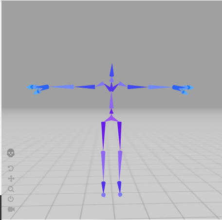
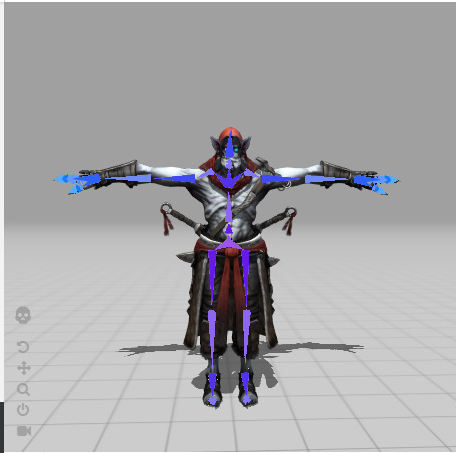
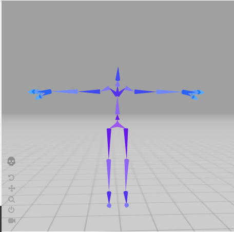
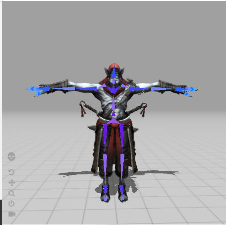
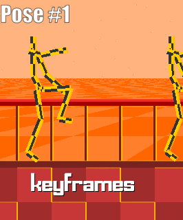
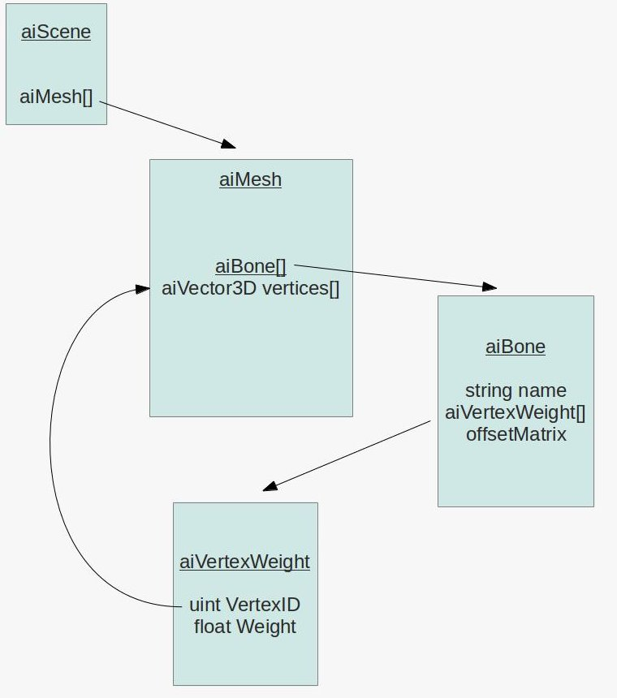

3D Animations can really bring our games to life. Objects in 3d world like humans & animals feels more organic when they move their limbs to do certain things like walking, running & attacking. This tutorial is about Skeletal animation which you all have been waiting for. We will first understand the concept thoroughly and then understand the data we need to animate a 3D model using Assimp. I'd recommend you to finish "Model loading" section of this saga as this tutorial code continues from there. You can still understand the concept and implement it in your way. So let's get started.
To understand how animation works at basic level we need to understand the concept of interpolation. Interpolation can be defined as something happening over time. Like enemy moving from point A to point B in time T i.e Translation happening over time . Enemy smoothly rotate to face player from Rotation A to B i.e Rotation happening over time and A tree is scaling up from size A to size B in time T i.e Scaling happening over time.
A Simple Interpolation equation used for Translation and Scale looks like this..
VectorEnd = VectorStart + (VectorEnd - VectorStart) * Time
Looks Familiar? Yes. This is a ray equation but in animation context widely known as Linear Interpolation Equation or Lerp. For Rotation we cannot use Vector. The reason for that is if we went ahead and tried to use linear interpolation Equation on a vector of X(Pitch),Y(Yaw) & Z(Roll), The interpolation won't be linear. You will encounter weird issues like Gimble Lock(See references section below to learn about it). To avoid this issue we use Quaternion for rotations. Quaternion provides something called Spherical Interpolation or Slerp which gives the same result as Lerp but for two Rotations A & B. I won't explain how the equation works because its out of the scope for now. You can surely checkout References section below to understand more.
The whole process of animation starts with addition of first component which is Skin in a software like blender or Maya. Skin is nothing but meshes which add visual aspect to the model to tell viewer how it looks like. But If you want to move any mesh then just like real world, you need to add Bones. You can see the images below to understand how it looks in software like blender....
  
 
These bones usually added in heirarchical fashion for characters like humans & animals and reason is pretty obvious. We want parent-child relationship among limbs. For example, If we move our right shoulder then our right bicep, forearm, hand and fingers should move as well. This is how the heirarchy looks like....
In the above diagram if you grab Hip bone and move it, all the limbs will be affected by its movement.
At this point, we are ready to create Animation KeyFrames. Keyframes are poses at different point of time in an animation. You will see in our code will interpolate between these Keyframes to go from one pose to another pose smoothly. Below you can see how poses are created for simple 3 frame jump animation...
 
We are almost there to the code part but first we need to understand how assimp holds imported animation data. Look at the diagram below..

Just like "Model loading" section. We will start with aiScene pointer which holds pointer to RootNode and look what do we have here, an array of Animations. This array holds aiAnimation contains informations like how long is an Animation which is represented here as TicksPerSecond and if you remember from last section that animation has keyframes. Similary, aiAnimation contains channels. This array contains all the bones and their keyframes which are going to engaged in this Animation. You will find 3 types of keys to interpolate between here, Translations,Rotations & Scale.
Alright, there's one last thing we need to understand and we are good to go for writing some code.
When we curl our forearm and we see our biceps muscle pop up. We can also say that forearm bone transformation is affecting vertices on our biceps. Similary, there could be multiple bones affecting a single vertex in a mesh. For characters like solid metal robots all forearm vertices will be affected by forearm bone but for characters like humans, animals etc, there could be upto 4 bones which can affect a vertex. Let's see how assimps stores that information...

We start with aiScene object again which contains an array of all aiMeshes. Each aiMesh object has an array of aiBone and each aiBone has the information we need, which is how much influence this aiBone will have on set of vertices on the mesh. aiBone contains the name of the bone, an array of aiVertexWeight which basically tells how much weight on what vertex in vertices array. Now we have one more member here which is offsetMatrix. Vertices should animate in bone space. This matrix is used to transform vertices from local space (T pose) to this bone's space. Don't worry. This will make more sense later on when we will see this in action.
Thank you for making it this far. We will start with directly looking at the end result which is our final shader code. This will give us good sense how its gonna end up like...
#version 430 core
layout(location = 0) in vec3 pos;
layout(location = 1) in vec3 norm;
layout(location = 2) in vec2 tex;
layout(location = 3) in ivec4 boneIds;
layout(location = 4) in vec4 weights;
uniform mat4 projection;
uniform mat4 view;
uniform mat4 model;
const int MAX_BONES = 100;
const int MAX_BONE_INFLUENCE = 4;
uniform mat4 finalBonesMatrices[MAX_BONES];
out vec2 TexCoords;
void main()
{
vec4 totalPosition = vec4(0.0f);
for(int i = 0 ; i < MAX_BONE_INFLUENCE ; i++){
if(boneIds[i] == -1) continue;
if(boneIds[i] >= MAX_JOINTS){
totalPosition = vec4(pos,1.0f);
break;
}
vec4 localPosition = finalBoneMatrices[boneIds[i]] * vec4(pos,1.0f);
totalPosition += localPosition * weights[i];
vec3 localNormal = mat3(finalBoneMatrices[boneIds[i]]) * norm;
}
mat4 viewModel = view * model;
gl_Position = projection * viewModel * totalPosition;
TexCoords = tex;
}
Starting from the top you see two new attributes layout declaration. First boneIds and second is weights. To understand how they get involved look at the finalBoneMatrices array. This array contains all the bones transformation during interpolating between different poses in a frame. boneIds contains Indices to bones which will affect pos vertex which is being processed and weights will decide by how much weight each bone transformation matrix will influence the vertex pos. This happens in a for loop above. Now let's add support in our Mesh class for bone weights first..
#define MAX_BONE_INFLUENCE 4
struct Vertex {
// position
glm::vec3 Position;
// normal
glm::vec3 Normal;
// texCoords
glm::vec2 TexCoords;
//bone indexes which will influence this vertex
int m_BoneIDs[MAX_BONE_INFLUENCE;
//weights from each bone
float m_Weights[MAX_BONE_INFLUENCE];
};
We have added two new attributes for Vertex, just like we saw in our shader. Now's let's load them in GPU buffers just like other attributes in our Mesh::setupMesh function...
class Mesh
{
...
void setupMesh()
{
....
// ids
glEnableVertexAttribArray(3);
glVertexAttribIPointer(3, 4, GL_INT, sizeof(Vertex), (void*)offsetof(Vertex, m_BoneIDs));
// weights
glEnableVertexAttribArray(4);
glVertexAttribPointer(4, 4, GL_FLOAT, GL_FALSE, sizeof(Vertex), (void*)offsetof(Vertex, m_Weights));
...
}
...
}
Just like before, except now we have added 3 and 4 layout locations for boneIds and weights. One imporant thing to notice here is how we are passing data for boneIds. We are using glVertexAttribIPointer and we passed GL_INT as third parameter.
Now we can extract bone weight information from assimp data structure. Let's make some changes in Model class...
class Model
{
private:
...
std::map<string, BoneInfo> m_OffsetMatMap;
int m_BoneCount = 0;
...
void SetVertexBoneDataToDefault(Vertex& vertex)
{
for (int i = 0; i < MAX_BONE_WEIGHTS; i++)
{
vertex.m_BoneIDs[i] = -1;
vertex.m_Weights[i] = 0.0f;
}
}
Mesh processMesh(aiMesh* mesh, const aiScene* scene)
{
vector vertices;
vector indices;
vector textures;
for (unsigned int i = 0; i < mesh->mNumVertices; i++)
{
Vertex vertex;
SetVertexBoneDataToDefault(vertex);
vertex.Position = AssimpGLMHelpers::GetGLMVec(mesh->mVertices[i]);
vertex.Normal = AssimpGLMHelpers::GetGLMVec(mesh->mNormals[i]);
if (mesh->mTextureCoords[0])
{
glm::vec2 vec;
vec.x = mesh->mTextureCoords[0][i].x;
vec.y = mesh->mTextureCoords[0][i].y;
vertex.TexCoords = vec;
}
else
vertex.TexCoords = glm::vec2(0.0f, 0.0f);
vertices.push_back(vertex);
}
...
ExtractBoneWeightForVertices(vertices,mesh,scene);
return Mesh(vertices, indices, textures);
}
void SetVertexBoneData(Vertex& vertex, int boneID, float weight)
{
for (int i = 0; i < MAX_BONE_WEIGHTS; ++i)
{
if (vertex.m_BoneIDs[i] < 0)
{
vertex.m_Weights[i] = weight;
vertex.m_BoneIDs[i] = boneID;
break;
}
}
}
void ExtractBoneWeightForVertices(std::vector& vertices, aiMesh* mesh, const aiScene* scene)
{
auto& boneInfoMap = m_OffsetMatMap;
int& boneCount = m_BoneCount;
for (int boneIndex = 0; boneIndex < mesh->mNumBones; ++boneIndex)
{
int boneID = -1;
std::string boneName = mesh->mBones[boneIndex]->mName.C_Str();
if (boneInfoMap.find(boneName) == boneInfoMap.end())
{
BoneInfo newBoneInfo;
newBoneInfo.id = boneCount;
newBoneInfo.offset = AssimpGLMHelpers::ConvertMatrixToGLMFormat(mesh->mBones[boneIndex]->mOffsetMatrix);
boneInfoMap[boneName] = newBoneInfo;
boneID = boneCount;
boneCount++;
}
else
{
boneID = boneInfoMap[boneName].id;
}
assert(boneID != -1);
auto weights = mesh->mBones[boneIndex]->mWeights;
int numWeights = mesh->mBones[boneIndex]->mNumWeights;
for (int weightIndex = 0; weightIndex < numWeights; ++weightIndex)
{
int vertexId = weights[weightIndex].mVertexId;
float weight = weights[weightIndex].mWeight;
assert(vertexId <= vertices.size());
SetVertexBoneData(vertices[vertexId], boneID, weight);
}
}
}
.......
};
As we saw in the diagram earlier that each aiMesh contains all the aiBones which are associated with the aiMesh, The whole process of bone weights extraction starts from processMesh function. For each loop iteration we are setting vertex bone weight data to its default values by calling function SetVertexBoneDataToDefault. Just before returning the new Mesh we call ExtractBoneWeightData. This function utilises the std::map we declared on top. This map stores offsetMatrix and boneIndex and will use bone name as its key.
Then we run a for loop for each aiBone and check if we have already extracted information for it by finiding it in the boneInfoMap. If we couldn't find it then its a new bone and we create new BoneInfo with an id and store it associated mOffsetMatrix to it. Then we create a new std::pair with bone's name as key and newly created BoneInfo as Value and Increment the boneCount counter to create id for next bone.
We have extracted the offsetMatrix for the bone and now we will simply iterate over all the weights in this bone and extract all vertices indices which will be influenced by this bone along with their weight and call SetVertexBoneData to fill up Vertex.boneIds and Vertex.weights with extracted information. Phew! Let's take a coffee break.

Let me break it down the flow to you, We will first load all the Animation and give it toModel and then we can tell model class to play an animation. We will update this animation flow with the help of Update method in Model every frame. Model will then ask Animator to interpolate between key frames and calculate final transformation matrices for each Bone engaged in the Animation. Then we will take the array of final transformations of all bones and give it to our shader to influence vertex positions,rotations and scale with different weights for different bones. Let's get it working now...